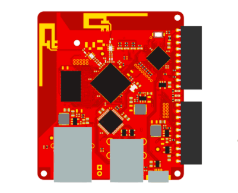

Your Own Dropbox: Getting Started with the Tessel 2

Common Commands & Workflow
```
npm install -g t2-cli
t2 list
t2 wifi -n <network> -p <password>
t2 provision
t2 update
t2 erase
```
t2 run webserver.js

t2 push webserver.js

Code
https://tessel.github.io/t2-start/modules/storage.html
Thank you!
Slides:
tw & gh: @chrisbodhi